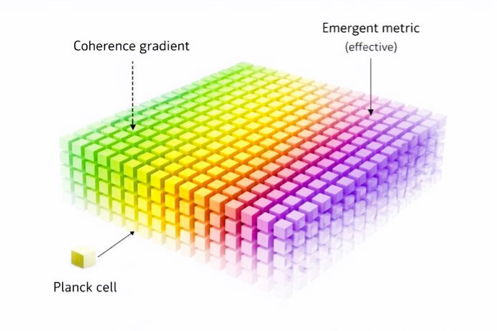
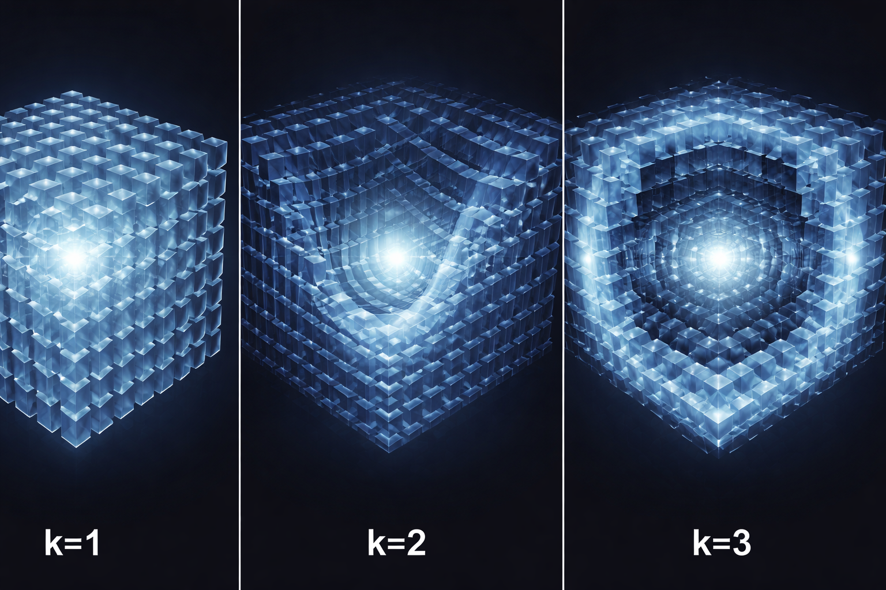

The Sobolev–Ozok Lattice (SOL) proposes that physical reality is built from discrete cells whose coherence and resolution dynamics generate geometry, motion, and structure across scales.
Instead of assuming spacetime as a continuous background, SOL treats it as an emergent result of local interactions. The framework is developed to connect quantum behavior, gravitational structure, cosmology, and particle-scale organization within one discrete picture.

If this is your first time visiting the project, this is the shortest way to understand what SOL is trying to do.
Spacetime is modeled as a discrete lattice of Planck-scale cells rather than a fundamentally continuous arena.
Coherence gradients between cells produce an effective geometric structure, so curvature is treated as emergent.
Quantum and large-scale behavior arise from resolution dynamics, coherence structure, and their higher-order corrections.
Different visitors need different entry points. Use the path that matches your level of interest.
Get the conceptual overview of the framework, its motivation, and its main physical picture.
Read philosophyReview the observational hooks, falsifiability, and the phenomena SOL claims should be distinguishable.
Open predictionsAccess the papers and manuscripts, including archived Zenodo records and ongoing theoretical development.
Browse papersThis layered picture is part of how SOL organizes the transition from local cell interactions to larger physical effects.

SOL is maintained as an active theoretical research program with papers archived and expanded over time.
Read manuscripts, track development, and review the project through the papers page, GitHub repository, and ORCID profile.